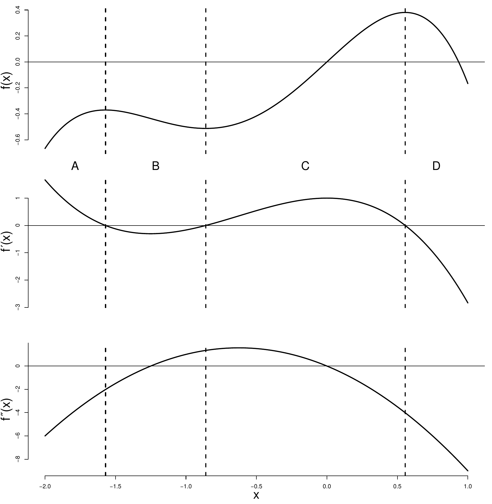
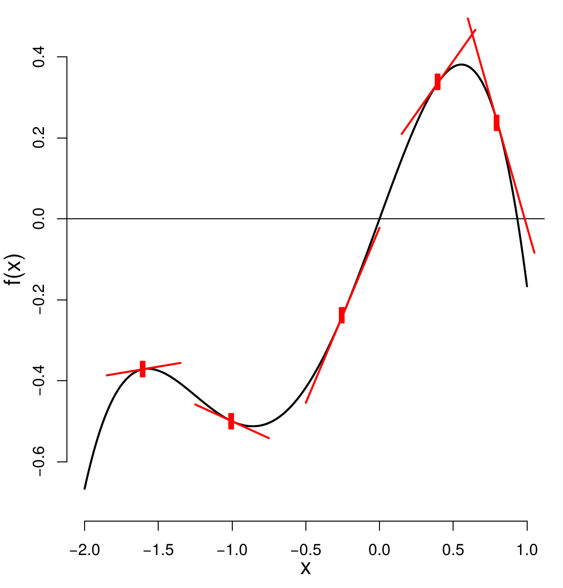
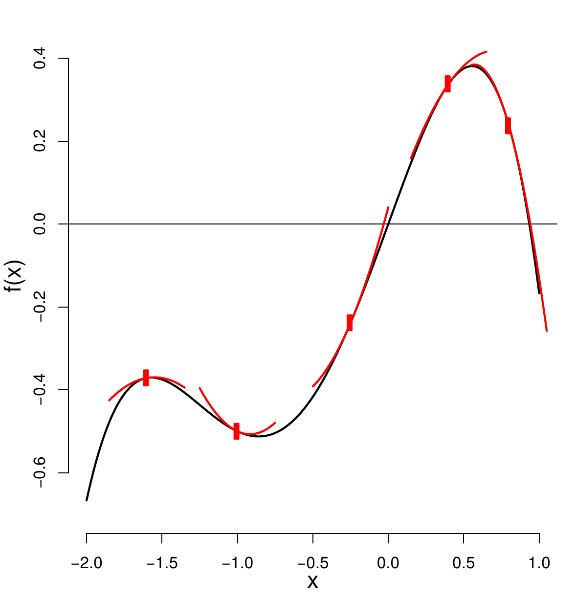
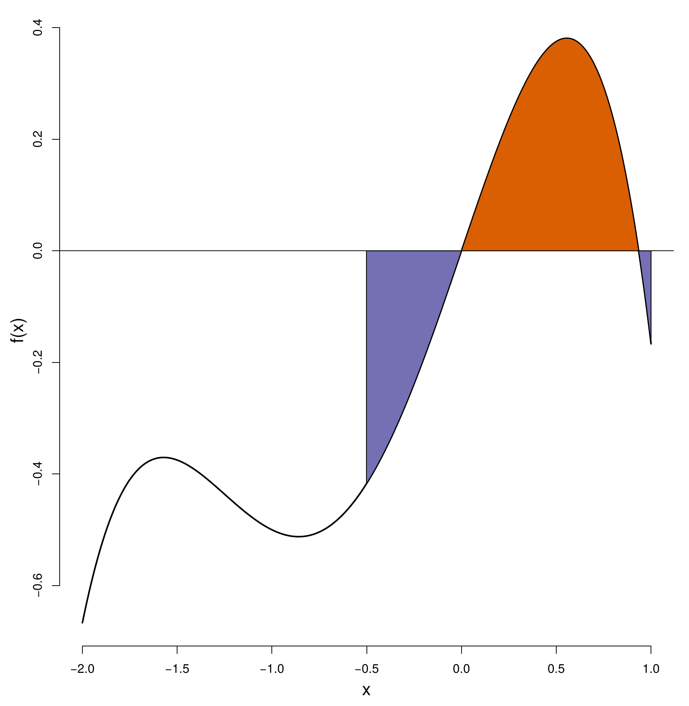
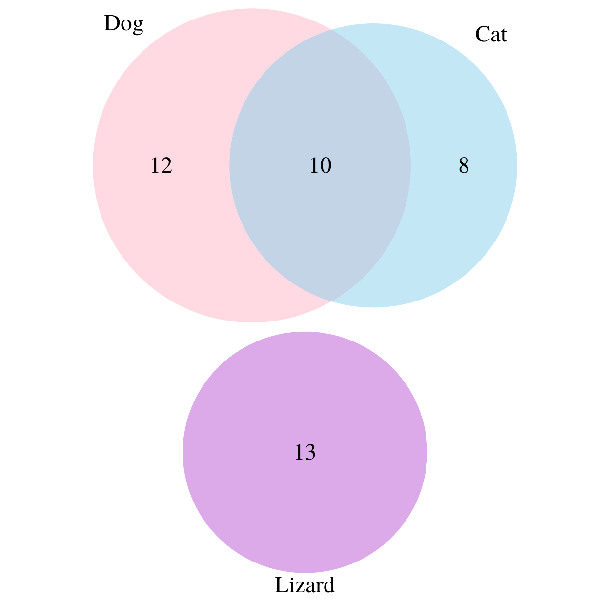
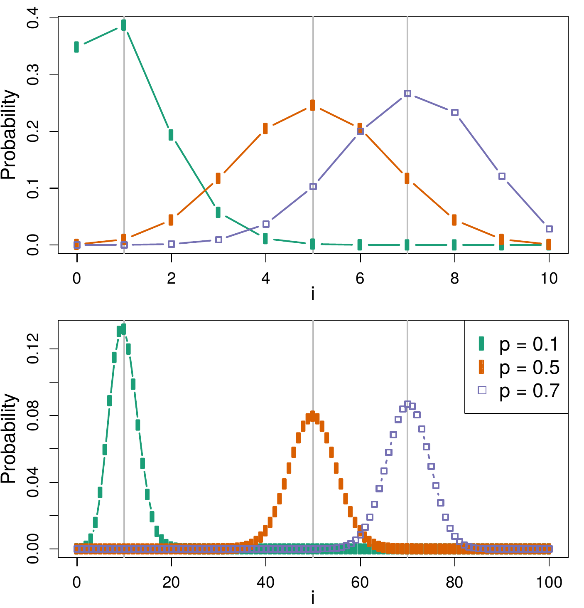
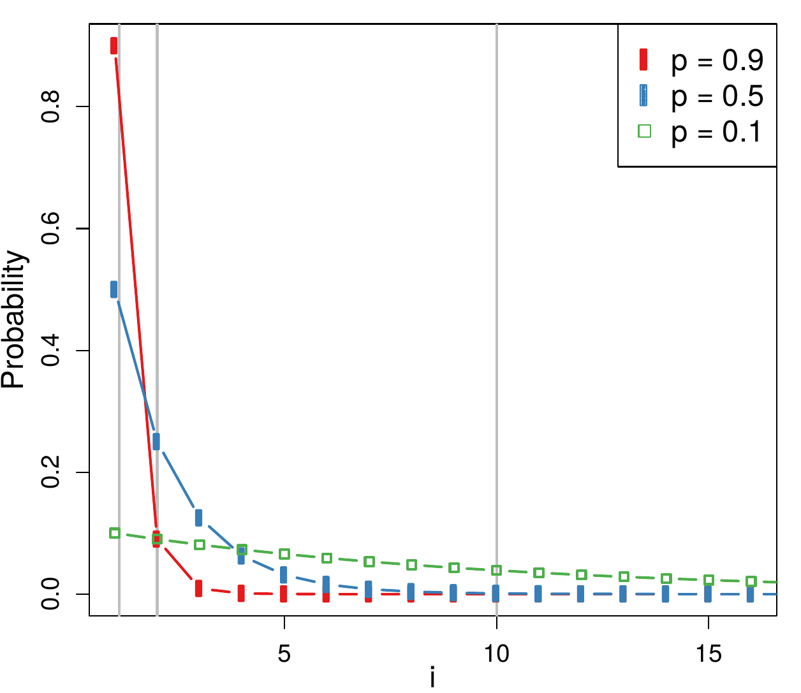
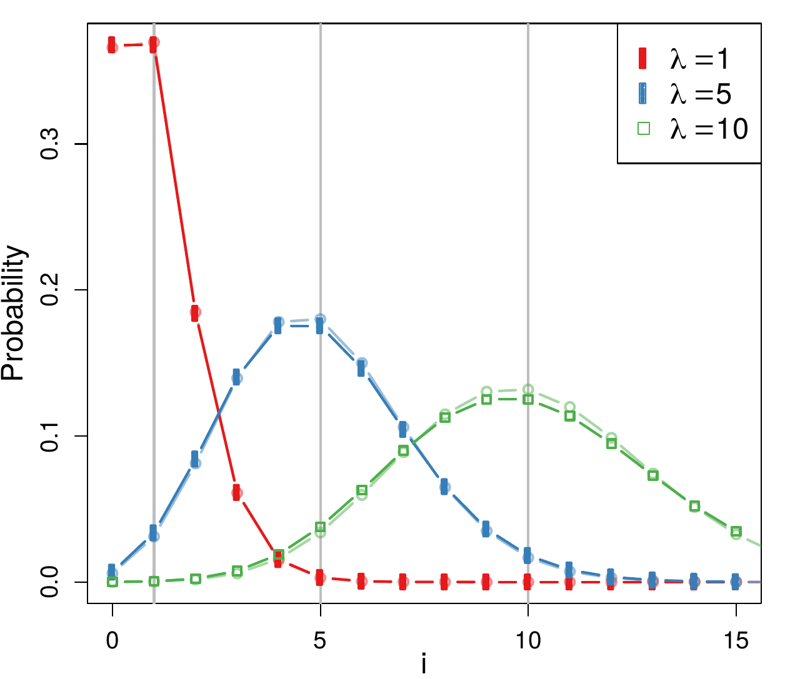
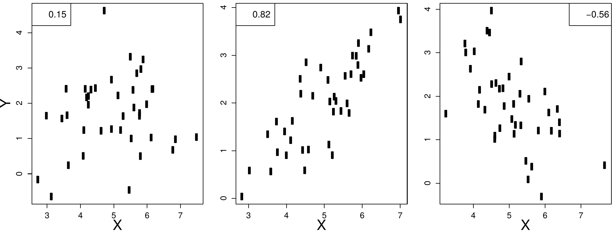
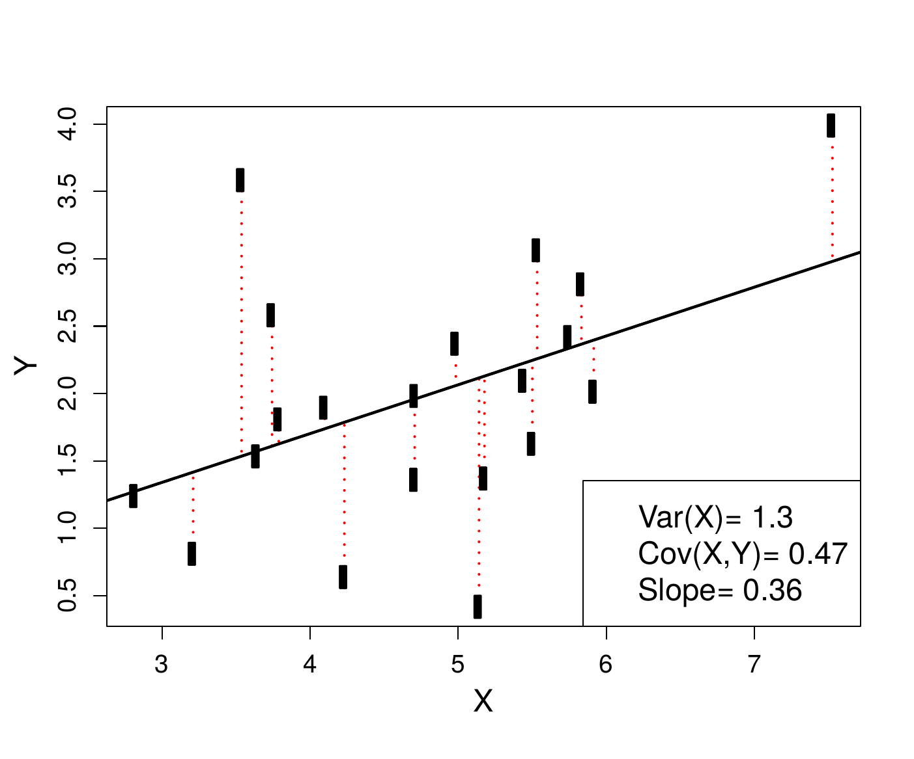

Appendix A — An Introduction to Mathematical Concepts
“Now, in the first place I deny that the mathematical theory of population genetics is at all impressive, [… We] made simplifying assumptions which allowed us to pose problems soluble by the elementary mathematics at our disposal, and even then did not always fully solve the simple problems we set ourselves. Our mathematics may impress zoologists but do not greatly impress mathematicians.”–Haldane (1964)
Throughout these notes we make use of mathematical concepts, many of which are based in probability theory and statistics. Here we briefly review some of these concepts. The wikipedia pages on statistics and math topics are often excellent introductions and worth consulting if you want to know more. Parts of this primer were originally written by Sebastian Schreiber and myself. Some of these concepts may go beyond what you have covered in previous courses. The notes do not rely on you knowing all of these results, but I’ll refer to this appendix when these concepts first come up in the main body of the notes. To answer the questions in the first chapter you will need to know some basic rules of probability, so reviewing Sections A.2.2 and A.2.1 below would be a good place to start.
A.1 Calculus
In evolutionary genetics we’re often interested in how quantities change over time, and so we’re interested in the rate of change over time. This particular obsession is shared with much of science and so the concepts we make use of appear in many other fields. The derivative \(f'(a)\) of a function \(f(x)\) at \(x=a\) represents the instantaneous rate of change of the function, \(\frac{df(x)}{dx}\), at \(x=a\) or, equivalently, the slope of the graph of the function at \(x=a\). A derivative of zero indicates a local maxima, minima, or saddle point of the function. An example is shown in Figure A.1, note how each maxima/minima of \(f(x)\) corresponds to a value of zero of \(f'(a)\).

To give a physical example, imagine that the derivative of position with respect to time gives the (instantaneous) speed of a car. Think of the top panel of Figure A.1 as showing a car driving up and down an alley, with \(f(x)\) giving the car’s position at time \(x\). The bottom panel shows the car’s speed, with the sign (i.e. \(+\) or \(-\)) of the derivative giving the direction of movement. Moving from left along the \(x\) (time) axis, in time period A our car is moving up the alley (page), the speed is positive (i.e. \(f'(a)>0\)). In the time period B, the car is reversing down the alley, its speed is negative (\(f'(a)<0\) ). As we move from A to B the car is beginning to slow down, i.e. the derivative gets small in magnitude, as it’s going to reverse direction at time indicated by the first dotted line at the point. At the dotted line between A and B, we are at the moment when the car is changing direction, the car is stationary, its speed is zero (i.e. \(f'(a)=0\) ).
We’ll sometimes want to know about the second derivative of \(f\), denoted by \(f''(a)\) or \(\frac{d^2f(a)}{d^2x}\). The second derivative measures the rate at which the first derivative is changing i.e. the concavity/convexity of the function. See Figure A.1. In our physical example, the second derivative with respect to time is the (instantaneous) acceleration of the car, as it is the rate of change in the speed of the car (signed by whether it’s accelerating in a positive or negative direction). One useful property of the second derivative is that it is positive at local maxima of the function, and negative for local minima of the function.
Approximating functions by Taylor Series.
A wonderful thing about derivatives is that they allow us to approximate complicated, nonlinear functions by linear functions (this is called a first-order Taylor approximation). Namely, a first order approximation of \(f(x)\) at \(x=a\) is given by
\[f(x) \approx f(a)+f'(a)(x-a) \mbox{ for $x$ near $a$} \tag{A.1}\]

Returning to our car example, this corresponds to trying to guess the past or future position of the car extrapolating from its current location and speed. We’ll do well when the car is traveling at a relatively constant speed, i.e. isn’t accelerating or deccelerating too fast.
Two common first-order Taylor approximations that we’ll encounter throughout the notes are
\[\begin{aligned} \exp(x)&\approx 1+x \mbox{ for $x$ near $0$} \\ (1-x)^k &\approx 1-k\,x \mbox{ for $x$ near $0$} \end{aligned} \tag{A.2}\]
where \(\exp\) is (natural) exponential function. We’ll also use the Taylor approximation given by Equation A.2 as a trick to write
\[\begin{aligned} (1+x)^L \approx \exp\left( L x\right) \mbox{ for $x$ near $0$,} \end{aligned} \tag{A.3}\]
which allows us to move from a geometric decay to an exponential decay. As a generalization of this, we’ll approximate the product
\[\begin{aligned} \prod_{i=1}^L (1+x_i) \approx \exp\left( \sum_{i=1}^L x_i\right) \mbox{if all $x_i$ are near $0$,} \end{aligned} \tag{A.4}\]
Where \(\prod_{i=1}^L\) is the product of elements running from \(i=1\) to \(L\) and \(\sum_{i=1}^L\) is the sum of entries from \(i=1\) to \(L\). This approximation is useful as it allows us move from a product to thinking about a sum (where averages are easier to think about).

We’ll sometimes want more accuracy and so use a second order approximation, i.e. we will approximate the graph of a function with a parabola instead of a line (see Figure A.3). This is often useful when examining the effects of stochasticity on some process. These second-order Taylor approximations take the form:
\[f(x)\approx f(a)+f'(a)(x-a)+f''(a)(x-a)^2/2 \tag{A.5}\]
where \(f''(a)\) denotes the second derivative of \(f\) at \(x=a\). In our car example, this is equivalent to predicting the location of the car from its speed and acceleration.
One place this second order approximation is useful is for the \(\log\) function and yields
\[\log(1+x)\approx x-x^2/2 \mbox{ for $x$ near $0$}. \tag{A.6}\]
Integrals
Regarding integrals \(\int_a^b f(x)\,dx\), just remember that they represent the signed area “under” the graph of \(y=f(x)\) over the interval \([a,b]\). The integral is found by taking the limit of the summed area under the curve in each bin \(dx\) as the bin size goes to zero. An example is shown in Figure A.4.

A.2 Probability
Evolution is fundamentally a random process. Which individuals live, die, and reproduce in any given moment is far from predictable. The randomness of Mendelian transmission, what genetic material is transmitted to the next generation, reflects randomness at the molecular and cellular level. While this makes it impossible to predict the outcome for a given individual we can speak of average outcomes and the statistical properties of evolutionary processes. Indeed evolution is a statistical process, evolution occurs because some types of individuals, and alleles, on average leave more offspring to subsequent generations. Thus to understand the details of models of evolutionary change we will have to understand something about probability and statistics.
Random Variables
A random variable \(X\), roughly, is a variable that takes on values drawn randomly from some probability distribution. There are two major types of random variables, discrete and continuous. For a discrete random variable, think of it as a person calling out numbers by drawing them randomly out of a hat with some distribution of numbered slips of paper. We use uppercase \(X\) to think about the number that might be drawn (before it is drawn) and lowercase \(x\) to denote the number that is actually drawn. Discrete random variables take on a countable number of values, say \(x_1,x_2,\dots\), with some probabilities \(p_1,p_2,\dots\). We can denote this assumption as \[\mathbb{P}[X=x_i]=p_i \mbox{ ``the probability that $X$ equals $x_i$ is $p_i$''}\]
Continuous random variables, which can take on values in a continuum, are characterized by their probability density function \(p(x)\) i.e. a function that satisfies \(p(x)\ge 0\) for all \(x\) and \(\int_{-\infty}^\infty p(x)\,dx =1\). For example, think about the precise time of day a baby is born in a hospital (not just the hour or the minute, where discrete random variables would suffice, but the precise moment). For these variables, \[\mathbb{P}[a\le X\le b] = \int_a^b p(x)\,dx \mbox{ ``the probability that $X$ is interval $[a,b]$ equals the area under the curve $p(x)$ from $a$ to $b$''}\] for example, we could ask the probability that a baby was born somewhere between midnight and 12.18am.
Basic Rules of Probability
Imagine a fairground game where you reach into a box and pull out an egg. There are 100 eggs in the box, 57 of them are empty. Forty three have a toy in them. There are eggs with a stuffed dog toy, eggs with a cat toy, eggs with a lizard toy, eggs with both a dog and cat toy in them. The counts of each type of egg are shown in Figure A.5.

Question A.1 You reach into the box and pull out one egg:
i) For each egg type (dog alone, cat alone, lizard, dog+cat, and no prize), what is the probability that you get an egg of that type? What do these probabilities sum to?
ii) What’s the probability of getting an egg with a dog? What is the probability of getting an egg with a dog in it or an egg without a dog in it.
iii) What’s the probability of getting an egg with a dog in it or an egg with a lizard.
These questions above illustrate the principle that if events A & B are mutually exclusive then \(\mathbb{P}(\textrm{A or B}) = \mathbb{P}(\textrm{A}) + \mathbb{P}(\textrm{B})\), following from these \(\mathbb{P}(\textrm{A or not A}) = \mathbb{P}(\textrm{A}) + \mathbb{P}(\textrm{not A}) = 1\). What is the probability of getting an egg with a dog or a cat? Well, for events that are not mutually exclusive we need to discount the sum of the probabilities by their overlap, giving
\[\mathbb{P}(\textrm{A or B}) = \mathbb{P}(\textrm{A}) +\mathbb{P}(\textrm{B}) - \mathbb{P}(\textrm{A \& B}). \tag{A.7}\]
We call \(\mathbb{P}(\textrm{A \& B})\) the joint probability of A & B.
Question A.2 What is the probability \(\mathbb{P}(\textrm{dog or cat})\)?
Conditional probability. We often want to know the conditional probability, the probability of an event conditional on some other particular event. For example, the conditional probability of getting a cat toy given that I’ve pulled out an egg containing a dog (recall that ten of the hundred eggs contain both a dog and a cat toy.). We write this as \(\mathbb{P}(\textrm{cat} | \textrm{dog})\), where we read \(| \textrm{dog}\) as ‘given dog’ or ‘conditional on dog’. The rule of conditional probabilities is that
\[\mathbb{P}(\textrm{A} | \textrm{B}) = \frac{\mathbb{P}(\textrm{A \& B} )}{\mathbb{P}(\textrm{B})} \tag{A.8}\]
we can now answer
Question A.3 What is \(\mathbb{P}(\textrm{cat} | \textrm{dog})\)?
Explain the underlying intuition of your answer?
By rearranging eqn , we obtain the rule that
\[\mathbb{P}(\textrm{A \& B}) = \mathbb{P}(\textrm{A} | \textrm{B}) \mathbb{P}(\textrm{B}) . \tag{A.9}\]
Thus we can always obtain the joint probability of A & B by multiplying the conditional probability by the probability of the event we are conditioning on. Equivalently, we could have computed the joint probability as
\[\mathbb{P}(\textrm{A \& B}) = \mathbb{P}(\textrm{B} | \textrm{A}) \mathbb{P}(\textrm{A}) . \tag{A.10}\]
these two ways of writing the same thing will come in useful in just a moment.
The law of total probability. The total probability of an event can be obtained by summing over all of the \(L\) mutually exclusive ways that A can happen
\[\mathbb{P}(\textrm{A}) = \sum_{i=1}^L \mathbb{P}(\textrm{A \& B$_i$}) = \sum_{i=1}^L \mathbb{P}(\textrm{A} | \textrm{B}_i) \mathbb{P}(\textrm{B}_i) \tag{A.11}\]
where \(\textrm{B}_1,~\cdots,~\textrm{B}_L\) give the mutually exclusive events that can occur alongside our event \(\textrm{B}\). This is the law of total probability. For example, we can write the probability of obtaining a cat as
\[\mathbb{P}(\textrm{cat}) = \mathbb{P}(\textrm{cat \& dog}) + \mathbb{P}(\textrm{cat \& not dog}). \tag{A.12}\]
Independence. Two events are independent of each other if
\[\mathbb{P}(\textrm{A \& B}) = \mathbb{P}(\textrm{A}) \mathbb{P}(\textrm{B}) \tag{A.13}\]
this requirement implies independence because the conditional and unconditional probabilities are equal, \(P(\textrm{A}) = P(\textrm{A} | \textrm{B})\), i.e. I learn nothing about the event \(\textrm{A}\) from the event \(\textrm{B}\) having occurred. For example, if I draw two eggs with replacement from the box the probability of getting a lizard then a dog is \(\mathbb{P}(\textrm{lizard then dog}) = \mathbb{P}(\textrm{lizard}) \mathbb{P}(\textrm{dog})\).
Bayes Rule. We often want to reverse of conditional probability statements, i.e. turn the statement of \(P(\textrm{B} | \textrm{A})\) into the statement of \(P(\textrm{A} | \textrm{B})\). We have two different ways of expressing the joint probability in terms of conditional probabilities. Because they each equal the joint probability, they are equal to each other, meaning
\[\mathbb{P}(\textrm{B} | \textrm{A}) \mathbb{P}(\textrm{A}) = \mathbb{P}(\textrm{A} | \textrm{B}) \mathbb{P}(\textrm{B}) . \tag{A.14}\]
Rearranging Equation A.14 we obtain
\[\mathbb{P}(\textrm{B} | \textrm{A}) = \frac{\mathbb{P}(\textrm{A} | \textrm{B}) \mathbb{P}(\textrm{B}) }{\mathbb{P}(\textrm{A})} \tag{A.15}\]
Equation A.15 is also called “Bayes’ Rule” or “Bayes’ Theorem,” and it which allows us to reverse the variable we condition on.
Question A.4 Use Bayes’ rule to calculate \(\mathbb{P}(\textrm{dog} | \textrm{cat})\) from the conditional probability you calculated in Question A.3.
Expectation of a Random Variable
The expectation of a random variable is the point at which the distribution is “balanced”. For discrete random variables it is given by
\[\mu = \mathbb{E}[X]=p_1x_1+p_2x_2+\dots + \tag{A.16}\]
The average outcome 1 over a set of independent events is an estimate of the mean \(\hat{\mu}\), where the hat denotes that it is an estimate. A more precise interpretation of the relationship between the average and the expectation is given by the law of large numbers described below. For a continuous random variable,
1 Recalling that we compute average, the sample mean, of a set of numbers \(X_1,\cdots,X_L\) as
\[\bar{X} =\frac{1}{L} \sum_{i=1}^L X_i \tag{A.17}\]
where the bar over the \(X\) denotes that it is the average value of \(X\).
\[\mathbb{E}[X]=\int x\,p(x)\,dx. \tag{A.18}\]
For any “reasonable” function, one can define \(\mathbb{E}[f(X)]\) by
\[\mathbb{E}[f(X)]=p_1f(x_1)+p_2 f(x_2)+\dots \tag{A.19}\]
for discrete random variables and
\[\mathbb{E}[f(X)]=\int f(x)p(x)\,dx \tag{A.20}\]
for continuous random variables.
A particularly important choice of \(f\) is \(f(x)=(x-\mu)\). In this case,
\[\sigma^2 = \mathbb{E}[(X-\mu)^2]= \mathbb{E}[X^2]-\mu^2 \tag{A.21}\]
is the variance of \(X\) which measures the mean deviation squared around the mean i.e. “the spread around the mean”. \(\sigma\) (i.e. the square root of the variance) is the standard deviation of \(X\). We can compute the sample variance as
\[\begin{aligned} \widehat{\sigma^2} &= \frac{1}{L-1} \sum_{i=1}^L (X_i - \bar{X})^2 \end{aligned} \tag{A.22}\]
Note that the units of our variance will be the units of \(X^2\), e.g. if \(X\) is height measurements in cm the variance will have units cm\(^2\). One reason that the standard deviation is a more intuitive than the variance is that its units are the same as \(X\), e.g. cms.
Another important choice of \(f\) is \(f(x)=\log x\). Provided that \(X\) is positive, \(\exp(\mathbb{E}[\log X])\) corresponds to the geometric mean of \(X\). Alternatively \(1/\mathbb{E}[1/X]\) corresponds to the harmonic mean of \(X\).
Question A.5 Your friend offers you a wager on the outcome of one round of playing the fairground egg game. She’ll give you: \(\$1\) for a only dog, \(\$2\) for a only cat \(\$5\) for an egg with a cat and a dog, and \(\$4\) for a lizard. However, she’ll take \(\$1\) from you if you get an empty egg. What is your expected payout?
Some Useful Properties of Expectations. One of most useful mathematical properties of the expectation is its linearity, in that the expectation of a linear function of random variables is the linear function applied to the expectation, i.e.
\[\mathbb{E}[aX+bY+c]= a\mathbb{E}[X] + b \mathbb{E}[Y] +c \tag{A.23}\]
where \(X\) and \(Y\) are random variables, and \(a\), \(b\), and \(c\) are constants. This holds regardless of whether \(X\) and \(Y\) are independent. Note, that our multipliers (\(a\) & \(b\)) must be constant, as this does not hold for the expectation of products of random variables. One sensible property of the linearity is the units of the mean is the same as our observation, for example if we change our measure height of adult height from inches to cm, the unit our mean also changes from inches to cm (as this change just involves multipling by a number).
Using our linearity of expectations, we can obtain an analogous result for the variance
\[Var[aX+bY+c]= a^2Var[X] + b^2 Var[Y] + 2ab Cov(X,Y) \tag{A.24}\]
we’ll discuss covariances (the \(Cov\) term) below. Note that the constant \(c\) has disappeared as the variance is a statement about the spread of the points around the mean, and so it doesn’t matter how we shift the mean.
We are often interested in the expectation of a random variable \(X\) conditional on some event \(Y=y\), this conditional expectation is
\[\mathbb{E}[X|Y=y] = \sum_{i=1}^L x_i \mathbb{P}(X=x_i|Y=y) \tag{A.25}\]
summing over the \(L\) possible values \(X\) could take. For example, we could ask the expected payoff of your friend’s wager conditional on knowing that you have an egg with a dog in it. With the analogous expression for continuous random variables replacing the sum with an integral.
We can recover our total expectation from the conditional expectations by taking the sum of our conditional expectation over the values that \(Y\) could take, weighting each by their probability
\[\mathbb{E}[X] = \sum_{j=1}^M \mathbb{E}[X|Y=y_j] \mathbb{P}(Y=y_j) \tag{A.26}\]
this is the law of total expectation, the analog to the law of total probability (Equation A.11). We can write this law more generally as \(\mathbb{E} \big[\mathbb{E}[X|Y]\big]\), i.e. we are taking the expectation of our conditional expectation over \(Y\).
Discrete Random Variable Distributions.

Important discrete random variables include
Binomial random variables count the number \(X\) of heads when flipping a coin \(n\) times whose probability of being heads is \(p\). In which case,
\[p_i = \frac{n!}{i!(n-i)!} p^i (1-p)^{n-i} \qquad 0\le i \le n. \tag{A.27}\]
For a binomial random variable,
\[\mathbb{E}[X]=np \textrm{, and } \sigma^2=np(1-p). \tag{A.28}\]
Examples are shown in Figure A.6, Note how the mass of the distribution becomes more centered on the mean for larger sample sizes, as the standard deviation increases only as \(\sqrt{n}\). Another way that we can write that our observation \(i\) is drawn from the binomial distribution is \(i \sim \textrm{Binomial}(p,n)\), where \(i \sim\) is read as “\(i\) is distributed as”. we will use the \(\sim\) notation as short hand for the distribution of random variable in the notes.
Geometric random variables count the total number of flips \(X\) before seeing a heads on a coin with probability \(p\) of being heads. In which case,
\[p_i =p (1-p)^{i-1} \qquad i=1,2,\dots \tag{A.29}\]
For a geometric random variable \(\mathbb{E}[X]=1/p\); if our coin is fair \(p={}^{1}\!/\!{}_{2}\) we wait two flips for a head on average while if the coin-flip is very biased against heads \(p \ll 1\) we can be waiting a very long time. The variance of a geometric random variable is \(\sigma^2 ={}^{1-p}\!/\!{}_{p^2}\), which means that the mass of the distribution is much more spread out if we consider the waiting time for rare events. See Figure A.7 for examples of the distribution.
Poisson random variables count the \(i\) events that occur in a fixed interval of time or space (\(t\)), when these events occur independently of each other and of time. If \(\lambda\) events are expected to occur in this interval, then
\[p_i = \lambda^i e^{-\lambda}/i! \tag{A.30}\]
For a random Poisson variable \(\mathbb{E}[X]=\lambda\) and \(\sigma^2 = \lambda\).
The form of this is less intuitive than that of the binomial. However, the Poisson is actually a limiting case of the binomial. Think of setting up a game of chance, where there’s a very large number of coin flips (\(n \rightarrow \infty\)), but you’ve set the chance of heads on a single coin flip is very low (\(p = {}^{\lambda}\!/\!{}_{n} \rightarrow 0\), where \(\lambda\) is a constant). Under these conditions you’d still expect some heads (\(np =\lambda\)), and the distribution of the number of heads is Poisson.
To see this we substitute \(p={}^{\lambda}\!/\!{}_{n}\) into our binomial probability and take the limit as \(n \to \infty\)
\[\begin{aligned} p_i &= \frac{n!}{i!(n-i)!} p^i (1-p)^{n-i} \\ &= \lim_{n\to\infty} \frac{n(n-1)\ldots (n-i-1)}{i!} \left( \frac{\lambda}{n}\right)^i \left(1- \frac{\lambda}{n}\right)^{n-i} \\ & = \lim_{n\to\infty} \frac{n^i}{i!} \frac{\lambda^i}{n^i} \left( 1-\frac{\lambda}{n}\right)^n \\ &= \lim_{n\to\infty} \frac{\lambda^i}{i!} e^{-\lambda} \end{aligned} \tag{A.31}\]
The third line assumes that \(n-i \approx n\), which holds for \(n \gg i\), and the forth line uses our exponential approximation given by Equation A.3.
See Figure A.8 to see how well they match. Therefore, the Poisson represents a limit of the binomial for rare events.


Continuous Random Variable Distributions.
Important continuous random variables include
Uniform random variables correspond to “randomly” choosing a number in an interval, say \([a,b]\). The pdf for a uniform is
\[p(x)=\frac{1}{b-a} \mbox{ for }x\in[a,b]\mbox{ and } 0 \mbox{ otherwise.} \tag{A.32}\]
For a uniform random variable \(\mathbb{E}[X]=(a+b)/2\).
Exponential random variables with rate parameter \(\lambda>0\) correspond to the waiting time for an event which occurs with probability \(\lambda \Delta t\) over a time interval of length \(\Delta t\). For these random variables
\[p(x)= \lambda \exp(-\lambda x) \mbox{ for }x\ge 0 \mbox{ and } 0 \mbox{ otherwise.} \tag{A.33}\]
For an exponential random variable \(\mathbb{E}[X]=1/\lambda\).
Normal random variables have the “bell-shaped” or “Gaussian” shaped distribution. They are characterized by two parameters, the mean \(\mu\) and the standard deviation \(\sigma\), and
\[p(x)=\frac{1}{\sigma\sqrt{2\pi}}\exp(-(x-\mu)^2/(2\sigma^2)). \tag{A.34}\]
For a normal random variable \(\mathbb{E}[X]=\mu\).
Multiple random variables
Covariance and Independence. To fully specify multiple random variables, say \(X\) and \(Y\), one needs to know their joint distribution. For example, if \(X\) and \(Y\) are discrete random variables taking on the values \(x_1,x_2,x_3,\dots\), then the joint distribution is given by
\[p_{i,j}=\mathbb{P}[X=x_i,Y=x_j] \mbox{ `` the probability that $X$ equals $x_1$ and $Y$ equals $x_2$''} \tag{A.35}\]
for all \(i\) and \(j\), see also our discussion around Equation A.13.
Alternatively, if \(X\) and \(Y\) are continuous random variables, then the joint distribution is a function of the form \(p(x,y)\) which satisfies
\[\mathbb{P}[a\le X\le b, c\le Y\le d]= \int_a^b \int_c^d p(x,y)\,dx~dy. \tag{A.36}\]
where \(X\) and \(Y\) are said to be independent if we can write the joint density as a product of the probability density functions
\[p(x,y) = p(x) p(y). \tag{A.37}\]
Given any function \(f(x,y)\) of \(x\) and \(y\), one can define the expectation \(\mathbb{E}[f(X,Y)]\) by integrating with respect to the distribution. Namely,
\[s \mathbb{E}[f(X,Y)]=\int \int f(x,y)p(x,y)\,dxdy \mbox{ for continuous case and } \sum_i \sum_j f(x_i,x_j) p_{i,j} \mbox{ in discrete case} \tag{A.38}\]
The covariance of \(X\) and \(Y\) is given by
\[Cov(X,Y) = \mathbb{E}[(X-\mu_X)(Y-\mu_Y)]=\mathbb{E}[XY]-\mu_X\mu_Y. \tag{A.39}\]
\(X\) and \(Y\) are said to uncorrelated if their covariance equals zero. If \(X\) and \(Y\) are independent, then they are guaranteed to be uncorrelated, but it is possible to construct \(X\) and \(Y\) to be uncorrelated but not independent.
Binary variable correlations. One application of our covariance formula is to two binary variables, for example taking values \(A/a\) and \(B/b\). Let’s set \(X=1\) if \(A\), and \(X=0\) otherwise, and \(Y=1\) if \(B\). For example, you could imagine drawing a once from a deck of cards and \(A\) being the event of drawing an queen or a jack, with \(a\) being any other type of card, and \(B\) being that the card is a heart and \(b\) it being any other suit. So \(XY=1\) if our card is a Queen or Jack of Hearts, and zero otherwise. Then
\[\begin{aligned} \mathbb{E}[XY] - \mathbb{E}[X]\mathbb{E}[Y] &= \mathbb{P}(X=A,~Y=B) - \mathbb{P}(X=A) \mathbb{P}(Y=B) \\ & = p_{AB} - p_{A} p_{B} \end{aligned} \tag{A.40}\]
where \(p_{AB}\) is the frequency of \(AB\), eg. the proportion of cards that are the Queen or Jack of hearts in our deck, and \(p_{A}\) is the (marginal) frequency of \(B\), e.g. the proportion of (and similarly for \(p_{A}\)).
| Thing 1 | |||
|---|---|---|---|
| Thing 2 | Absent | Present | |
| Absent | 20 | 1 | |
| Present | 1 | 9 |
Question A.6 What is the covariance of \(A\) and \(B\) in our deck of cards example?
What is the covariance of the presence of Thing 1 and 2 in The Cat in the Hat (Table A.1)?
Calculate the correlation for each of the above.
Sample Covariance and Correlation. We can calculate the sample covariance for \(X\) and \(Y\) of a set of observations of \(X_1, \cdots, X_L\) and \(Y_1, \cdots, Y_L\), where these observations are paired \((X_i,~Y_i)\) asx
\[\begin{aligned} \widehat{\sigma_{XY}^2} &= \frac{1}{L-1} \sum_{i=1}^L (X_i - \bar{X}) (Y_i - \bar{Y}) \end{aligned} \tag{A.41}\]
this captures the extent to which two sets of numbers covary. For example, the running speeds of kids in a race at age 8 and 9 positively covary. Example datasets are shown in Figure A.9.

To move covariances to a more understandable scale we can divide through by the product of the standard deviations
\[Cor(X,~Y) =\rho_{XY} = \frac{{\sigma_{XY}}}{\sigma_{X} \sigma_{X}} \tag{A.42}\]
this is the correlation of our variables \(X\) and \(Y\), if we calculate it for our sample it is our sample correlation. A correlation can range between \(1\), perfectly correlated, to \(-1\) perfectly negatively correlated. If \(\rho_{XY} =0\) the variables are said to be uncorrelated.
Fitting a linear regression using least squares. We often want to approximate the relationship between our two variables \(X\) and \(Y\) by the best fitting linear relationship predicting \(Y\) value from their observed \(X\) value. For example, think of a linear prediction of a child’s weight from their height. See Figure A.10 for an example plot. To do this we can think of approximating the \(Y_i\) that accompanies the \(X_i\) value for the \(i^{th}\) pair of data points by
\[Y_i \approx a+ b X_i \tag{A.43}\]
where \(a\) and \(b\) are the intercept and slope of a line.

What is the best fitting line? One common definition of the optimal fit is the choice of \(a\) and \(b\) that minimize the squared error between the observed (\(Y\)) and their predicted values, i.e.
\[\sum_{i=1}^L (Y_i - a - b X_i )^2 \tag{A.44}\]
here \((Y_i - a - b X_i)^2\) is the squared residual error, the square of the length of the dotted lines in Figure A.10. The best fitting slope, i.e. that with least squared error, is
\[b = {}^{ \widehat{\sigma_{XY}^2}}\!/\!{}_{ \widehat{\sigma_{X}^2}} \tag{A.45}\]
i.e. the sample covariance of \(X\) and \(Y\) divided by the sample variance of \(X\). Thus the slope will be of the same sign as the covariance, and will be larger in magnitude when the covariance of \(X\) and \(Y\) is a large proportion of the variance of \(X\).
This least squares fit is the solution to the linear regression
\[Y_i \sim a+ b X_i + \epsilon_i \tag{A.46}\]
where the errors (\(\epsilon_i\)) are uncorrelated across data points with an expectation of zero and constant but unknown variance. These assumptions would hold for example if \(\epsilon_i \sim \textrm{Normal}(0,\sigma)\).
We often want to include additional terms in our regression, or have more complicated error structures, but these extensions can usually be understood as simple extensions of this machinery. For example, least-squares can also be used to fit a non-linear function of \(X\), \(f(X,~\Omega)\), where we minimize
\[\sum_{i=1}^L (Y_i -f(X_i; ~\Omega ))^2 \tag{A.47}\]
over our choices of parameters \(\Omega\). Often there is no analytical solution, i.e. no equivalent of Equation A.45, and the answer must be found computationally exploring over choices of \(\Omega\) (using tools available in R and other programming languages). Throughout the book we use non-linear least squares to fit various models to data.
Useful Properties of Covariances. Following from the linearity of expectation, Equation A.23, if we rescale \(X\) to \(mX+n\) and \(Y\) to \(oY+p\) then
\[Cov(mX+n,~oY+p) = (mo) Cov(X,Y) \tag{A.48}\]
Such linear transforms leaves our correlation unaffected, as it cancels out of the top and bottom of Equation A.42.
Useful Limits.
Law of Large Numbers. If \(X_1,X_2,\dots\) are a sequence of independent random variables (i.e. “the outcomes of a sequence of independent experiments) with common expectation \(\mu= \mathbb{E}[X_i]\), then
\[\frac{X_1+\dots +X_n}{n} \to \mu \mbox{ as }n\to \infty \mbox{ with probability one.} \tag{A.49}\]
Hence, LLN implies that if you repeat a bunch of experiments and take the average outcome (\(\bar{X}\)) from the experiments, the value you get is likely to be close the expected outcome of the experiment.
Of course, in the real world, we can only perform a finite number of experiments in which case it is useful to have a sense of how much variation there will be in the average outcome. The central theorem is the key tool for understanding this variation.
Central Limit Theorem. If \(X_1,X_2,\dots\) are a sequence of independent random variables (i.e. “the outcomes of a sequence of independent experiments) with common expectation \(\mu= \mathbb{E}[X_i]\) and variance \(\sigma^2\), then
\[\frac{X_1+\dots +X_n-\mu \,n }{\sqrt{n}\sigma} \to \mbox{ normal distribution with mean $0$ and variance $1$ as $n\to \infty$ } \tag{A.50}\]
Hence, for \(n\) large enough \(X_1+\dots+X_n\) is approximately normally distributed with mean \(\mu\,n\) and variance \(\sigma^2 n\). This is one of the reasons the normal distribution is so useful, many outcomes (e.g. phenotypes) have an approximately normal distribution as they are the combined outcome of many (somewhat) independent quantities.